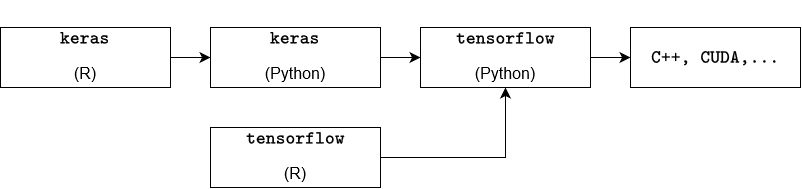

# install.packages("remotes")
remotes::install_github("rstudio/tensorflow") Problem Set 10
Foreword
In this exercise, we will build and train deep neural networks using the TensorFlow for R framework. Furthermore, we will shortly discuss some theoretical concepts regarding interpretable machine learning and learn how to apply those concepts to the neural networks we trained in the previous exercises.
Installing TensorFlow for R
In the last exercise session, we trained multi-layer perceptron models (MLP models, or neural networks) using the {tidymodels} framework. The {brulee} library provides an interface that allows the use of the already known {tidymodels} workflow. However, using more complex network structures and more versatile approaches for training an MLP model requires a different approach. The {tensorflow} library provides a high-level API like Keras for model development, that is easy to use and highly productive.
To to get everything to work, you will need to follow the steps outlined below.
Install the
{tensorflow}package using the{remotes}package:Once the
{tensorflow}package is installed and updated, we need to make sure thatPythonis installed on our machine. The reason is, thatTensoFflowis written inC++andCUDAwithPythonbeing an interface to those languages. Since this interface has not yet been translated directly to R the most efficient approach was to create another interface that allows forRcode to be translated intoPythonwithout having to write a single line ofPythoncode. To check ifPythonis already installed, you can execute the following snippet. If the snipped returns an empty character thenPythonis likely not yet installed.Sys.which("python")Pythoncan then be installed by utilizing the{reticulate}library:# install.packages("reticulate") reticulate::install_python()After installing
Pythonand the{tensorflow}R library, we need to create aPythonvirtual environment and install theTensorFlowpackage in this virtual environment. This can be done by using the following snippet:library(tensorflow) install_tensorflow(envname = "r-tensorflow")An additional layer on top of
TensorFlowis provided byKeras.Kerasis aPythoninterface that communicates withTensorFlowwith the benefit of being simple, flexible, and powerful.install.packages("keras") library(keras) install_keras()
In summary, the process can be illustrated by the following diagram:

If everything was installed successfully, the following snippet should run without any issues:
library(tensorflow)
library(keras)
tf$constant("Hello TensorFlow!")tf.Tensor(b'Hello TensorFlow!', shape=(), dtype=string)
Troubleshooting
There are several common problems you can run into while trying to install Python and TensorFlow which will be listed below with a potential solution.
Installation of
{tensorflow}:remotes::install_github("rstudio/tensorflow")If the return value is
Skipping install of ‘tensorflow’ from a github remote, the SHA1 (eeb1e66b) has not changed since last install. Use
force = TRUEto force installationthen
{tensorflow}has already been installed.Installation of the
Pythonpackagetensorflow:library(tensorflow) install_tensorflow(envname = "r-tensorflow")If the return value is
Error in install_tensorflow(envname = “r-tensorflow”) : You should call install_tensorflow()/install_keras() only in a fresh R session that has not yet initialized Keras and TensorFlow (this is to avoid DLL in use errors during installation)
then restart the R under
Session -> Restart R. It is likely that thePythonpackage has already been installed, so instead of callinginstall_tensorflow(envname = "r-tensorflow")again, try the following snippet instead:library(tensorflow) tf$constant("Hello TensorFlow!")tf.Tensor(b'Hello TensorFlow!', shape=(), dtype=string)Installation of the
Pythonpackagekeras:library(keras) install_keras()If the return value is
Error in tensorflow::install_tensorflow(method = method, conda = conda, : You should call install_tensorflow()/install_keras() only in a fresh R session that has not yet initialized Keras and TensorFlow (this is to avoid DLL in use errors during installation)
then restart the R under
Session -> Restart R. It is likely that thePythonpackage has already been installed, so instead of callinginstall_keras()again, try the following snippet instead:library(tensorflow) library(keras) tf$constant("Hello TensorFlow!")tf.Tensor(b'Hello TensorFlow!', shape=(), dtype=string)
Exercises
Besides the keras and tensorflow library we will need the following as well:
library(tidyverse)
library(tidymodels)
library(patchwork)Exercise 01: Training a deep neural network with keras
In this first exercise, we want to create and train deep neural networks with keras. The underlying dataset will be the rent_aux dataset we have considered in the second exercise session.
Recall that it contains roughly 850 rental listings for flats in Augsburg sourced from the online platform ImmoScout24 on three different dates in 2018 and 2019.
Exercise 01a: Data preparation
Exercise 01a i:
Read the dataset and preprocess it similarly to Exercise 2a on Exercise Sheet 03.
Exercise 01a ii:
Create a training and test split for the data.
Exercise 01a iii:
Once the split is successfully created, write a recipe that preprocesses the training data as follows:
baseRentis fit on every other variable.scoutIdis assigned a new role"ID".interiorQualandconditionare turned into ordinal scores.- Dummy variables for
geo_plzare created. - A zero variance filter is applied to all predictors
- all numeric_predictors are normalized.
Exercise 01a iv:
At this point during our model preparation the approach starts to differ from the usual {tidymodels} procedure. We will now have to use the prep and bake functions on the training data to create a preprocessed dataset. This preprocessed dataset then needs to be split into training features and training labels. When creating the training features, don’t forget to remove the variable scoutId as it should not be used as a predictor.
Exercise 01a v:
Repeat the exercise above for the test data.
Exercise 01b: Training an unregularized DNN
Once we have successfully set up our data, we can move on to specifying our neural network architecture. We will start out by training an unregularized neural network and then compare it to a network with dropout and weight decay.
Exercise 01b i: Setting up the model
Write a function build_model that takes the following inputs:
n_input: input dimension (number of training labels).h1: dimension of the first hidden layer.h2: dimension of the second hidden layer.n_output: output dimension.d1: dropout rate of the first hidden layer.d2: dropout rate of the second hidden layer.
Given those inputs, the function should then define a sequential model with 3 dense layers (where the first two are equipped with the "relu" activation function) and 2 dropout layers in between.
Tip
A similar model has been specified on slide 150 in the lecture notes. The goal here is to write a simple wrapper function that allows to specify the network parameters.
Exercise 01b ii: Training the model
Define a model called dnn_model with the newly written function from the previous exercise to which you pass the following inputs:
n_input=ncol(training_features)(note, that the variable name might differ in your implementation)h1= 50h2= 200n_output = 1d1 = 0d2 = 0
Once the model is specified, compile the model using the compile function with loss specified as "mae" and optimizer "optimizer_adam", where the learning rate is equal to 0.001 and the weight decay equal to 0.
After compiling the model, we need to train it by using the fit function. As input parameters for the fit function, use the previously defined training features and training labels. Furthermore, set the validation split to 0.2 and the number of epochs to 200.
After fitting the model, plot the history of the training procedure using the plot function.
What can be said in terms of overfitting?
Exercise 01b iii: Evaluating the model on the test set
Evaluate the model on the test set using the keras::evaluate function.
Exercise 01c: Training a regularized model
Repeat Exercise 01b but set the dropout rate for both layers to 0.1 and the weight decay parameter to 0.001.
Exercise 1d:
Compare both models. What can be observed from the plots?
Exercise 02: Theoretical aspects of interpretable machine learning
Exercise 02a:
Explain in your own words the difference between global interpretability models and local interpretability models.
Exercise 02b:
Explain in your own words the meaning of “post-hoc” interpretation mehtods.
Exercise 2c:
Explain in your own words the difference between individual conditional expectation (ICE) for a feature and partial dependence on a feature.
Exercise 03: Practical interpretable ML
For the following exercises we will use the model dnn_model_reg from Exercise 01 c to explore different interpretability methods. The package that provides these methods is {iml} which stands for “interpretable machine learning”.
#install.packages("iml")
library(iml)Exercise 03a: Creating a predictor
Create a new Predictor object called mod by piping the model dnn_model_reg into the Predictor$new function with additional arguments data = train_features, y = train_labels.
This predictor mod will be used throughout the remaining exercises.
Exercise 03b: Permutation feature importance
Familiarize yourself with the FeatureImp function and plot the feature importance by setting the loss to "mae"and number of repetitions to 10. Which features is the most and least important feature?
Exercise 03c: ICE and partial dependence
Familiarize yourself with the FeatureEffect function. Then, for the two features identified in the previous exercise create and plot two FeatureEffect plots where the first pair is created using the method "ice" and the second pair created by using the method "pdp".
Once you created the plots for the features, explain the differences within each pair.
Exercise 03d: Local surrugate models
Familiarize yourself with the LocalModel function and create a local surrogate model for the second observation of the training features by using the "gower" distance. Make sure to create the surrogate model for every feature. After creating the model, use the plot function to visualize the model and identify the feature that has the largest effect on the outcome variable baseRent.